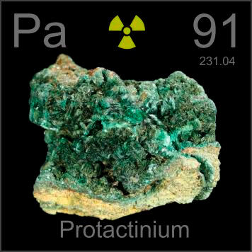

HOME
PREVIOUS
NEXT

Protactinium
Atomic Weight: 231.03588[note]
Density: 15.37 g/cm3
Melting Point: 1572 °C
Boiling Point: 4000 °C
Protactinium occurs in vanishingly small quantities in the natural decay chains of uranium and thorium minerals. At most a few atoms at a time exist in a rock like this, and you can't see any of them.